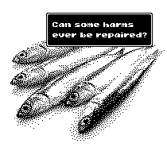

We like the idea of karmic justice because it is comfortable to think our suffering is paying for our transgressions and that it is not in vain, while also knowing that the people who have wronged us will also pay for what they did.
Does knowing that whoever caused us suffering is paying for it with their own suffering benefit us in any way? If someone steals something, does it help the person they stole from to know that the thief also got robbed?
If not, then how does one pay for what they did? Sometimes, it may be as simple as making up for it, but what about cases where that is not possible? Some transgressions are irreversible.
Should those be ignored since there is no way to compensate, or should the responsible party do the most they can, even if it will never be enough? If someone can live with the weight of their irreparable sins, what does that say about them?